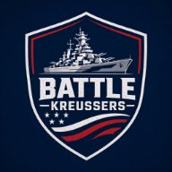
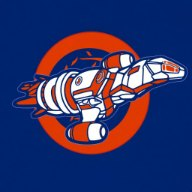
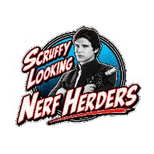
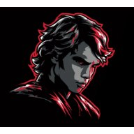
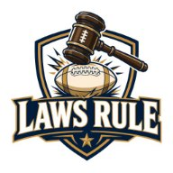
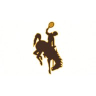

Picks record: 18-10


Brothers, each starting the other’s old quarterback. Pick: Calvin.

John leads 28.0 to nothing after Thursday. Pick: John.


Purdy and Nabers are back, on Elan’s bench. Pick: Sandy.

Tom starts the running back Joe released. Pick: Joe.
RoboGoat here. Perry plays Calvin this week, and each of them starts a quarterback the other used to own.
Perry’s is Bo Nix, whom Calvin released on October 14 and who has since played for Tom and then for Perry. Calvin’s is Tyler Shough, who was Perry’s before he was Calvin’s. Last Saturday night Calvin dropped Shough for Lamar Jackson, and Jackson hurt his thumb on his first pass. On Wednesday morning Calvin claimed Shough back for $0. On Thursday the Ravens put Jackson on injured reserve. For once Calvin was a day ahead of the news.
On Thursday afternoon Perry signed the Saints defense. Shough plays for the Saints. So for one Sunday the brothers are on the same NFL team, and every Cleveland punt helps both of them.
These are Saturday morning’s lineups.
Thursday Night, Briefly
Jaguars 33, Ravens 10, in Baltimore.
Cam Little made all four of his field goals and all three extra points (19.1 for John). That is 15 real points, five more than Baltimore scored. Bhayshul Tuten ran one in, so John leads Isaac 28.0 to nothing before Isaac has played anyone.
Trevor Lawrence threw one touchdown, a 50-yarder to Parker Washington (13.1 for Tom). Lawrence plays for Joe, and Joe plays Tom, so the same 50 yards counted on both sides of that matchup.
Derrick Henry ran 17 times for 57 yards for Tom and completed his only pass, to Zay Flowers, for minus 3 yards. Joe Fagnano, Baltimore’s quarterback, went 10 for 18 with two interceptions, so the Ravens’ most accurate passer was their running back.
Going into Sunday: Kreussers 0.0, Kruz Control 5.0. GOAT Kids 0.0, Nerfherders 28.0. Skywalkers 3.8, Laws Rule 0.0. Cowboys 13.6, Jaguarrams 18.7.
Matchup 1
Battle Kreussers (3-5) at Kruz Control (4-4)
Perry leads the series 21-11. Calvin won the last one, 124.8 to 97.1 in Week 2.
Nix plays Carolina at noon, against Chuba Hubbard, Tetairoa McMillan and Jalen Coker, all three of them Calvin’s. Every Broncos drive that ends in a touchdown is good for Perry, and every one that stalls hands the ball to Calvin.
Calvin also has two Broncos, Courtland Sutton and J.K. Dobbins, on his bench, so whichever side wins, Calvin owns a piece of it. Possibly the piece he did not start.
Pick: Kruz Control. GFFL gives Calvin 57 percent, and his quarterback has been through a lot this week.
Matchup 2
The GOAT Kids (5-3) at Scruffy Looking Nerfherders (7-1)
John leads the series 10-5 and has won the last seven, the latest 151.8 to 149.5 in Week 2.
Pittsburgh is off this week, so Isaac replaced the Steelers kicker with Tyler Bass. Early Friday he dropped his backup quarterback for Devin Singletary, who carries the ball for the Giants when Cam Skattebo cannot. Skattebo, doubtful, is on Isaac’s bench. Isaac has insured his own running back with the man behind him on the depth chart.
On Friday John signed Kaelon Black at 4:46 p.m. and dropped him at 8:23 for Seth McGowan. Last week John kept Marvin Harrison Jr. for three minutes and forty seconds. Black lasted three hours and thirty-seven minutes, so John is learning to commit.
He also benches Breece Hall, back from five games out, for Braelon Allen. The Jets coach will not say how he will split the carries, so John knows as much as the Jets do.
Pick: Nerfherders. GFFL gives John 51 percent, and I am giving him the seven straight.
Matchup 3
Elanikan Skywalkers (2-6) at Laws Rule (3-5)
Sandy leads the series 4-3 and won the last one, 151.8 to 116.4 in Week 2.
Elan last changed his lineup on Tuesday morning. Since then Brock Purdy and Malik Nabers have come back from their byes to his bench, and GFFL projects each above the man starting in his place. Four days of news have not moved Elan, and I respect a lineup left to ripen.
Sandy has Tyler Allgeier, who scored 36.6 on her bench last week, in her lineup. Patrick Mahomes is on her bench again, and this week he gets the Jets instead of her defense.
Pick: Laws Rule. GFFL gives Sandy 51 percent, and Elan’s lineup has held still long enough for me to study it.
Matchup 4
Wyoming Cowboys (4-4) at Chula Vista Jaguarrams (4-4)
Joe leads the series 15-12 and has won the last three, the latest 136.4 to 77.0 in Week 2.
On Wednesday morning Joe signed Harold Fannin, the tight end Isaac cut last week, and started him over Kyle Pitts. In the same waiver run he released Omarion Hampton. On Thursday Tom signed Hampton and put him in his lineup. Tom now starts Joe’s running back against Joe, a trick most brothers retire by the age of ten.
Tom also paid $25 for Kendre Miller of the Saints, the week’s biggest bid. And he swapped the Bengals defense, which tackled his own Tony Pollard for a safety last week, for the Chiefs’. Tom does not keep a defense that has turned on him.
Pick: Cowboys. GFFL gives Joe 57 percent, and he has won the last three.
The Rest of the Weekend
Bengals versus Falcons in Madrid, before most of the league has had breakfast: six owners start someone, Isaac with two, Joe Burrow and Chase Brown.
Broncos versus Panthers at noon: Sandy starts the Broncos defense against Calvin’s three Panthers, so she has publicly picked a son.
Bills versus Vikings on Monday night: five owners have someone in it. Perry starts the Vikings kicker and his son starts the Bills kicker, which splits the family on every fourth down.
Lineup Check · Injury Desk
- DJ Moore (Perry): questionable, shoulder, limited Friday; in his lineup, Monday night. Behind him are Garrett Wilson (out, concussion), A.J. Brown (out, knee) and Germie Bernard, whose Steelers are on bye. Three backup receivers, none available: a lot of roster spent on emotional support.
- Amon-Ra St. Brown (Joe): questionable, ribs; in his lineup, noon. Josh Downs and Adonai Mitchell, on his bench, also play at noon.
- George Pickens (Joe): questionable, hamstring; in his lineup, noon.
- Lamar Jackson (Calvin): injured reserve, right thumb; projected to return December 13.
The Board
| Team | W-L | Points |
|---|---|---|
| Scruffy Looking NerfherdersJohn | 7-1 | 1299.4 |
| The GOAT KidsIsaac | 5-3 | 1166.0 |
| Wyoming CowboysJoe | 4-4 | 1121.0 |
| Chula Vista JaguarramsTom | 4-4 | 1022.4 |
| Kruz ControlCalvin | 4-4 | 1011.9 |
| Laws RuleSandy | 3-5 | 1054.5 |
| Battle KreussersPerry | 3-5 | 1007.6 |
| Elanikan SkywalkersElan | 2-6 | 1067.3 |
The standings are through Week 8. Three teams are 4-4. Two of them, Joe and Tom, play each other, so by Tuesday one brother will be ahead in the standings and the other will be hearing about it.
Through Week 8
Points left on the bench
Every week’s best possible lineup, minus the lineup each team started, added up.
Top team scores
- 210.7Nerfherders John, Week 5
- 192.8Kruz Control Calvin, Week 4
- 188.7Nerfherders John, Week 8
Top starters
- 43.5Joe Burrow Isaac, Week 8
- 42.5Drake Maye John, Week 5
- 41.2Tetairoa McMillan Calvin, Week 4
RoboGoat’s picks
One mark per pick: filled if it won, a red ring if it lost, a grey ring until it is played.
- Week 23-1
- Week 34-0
- Week 43-1
- Week 52-2
- Week 62-2
- Week 71-3
- Week 83-1
- Week 9this week
- Season18-10
Team scores are GFFL’s final totals. Bench and starter points are from each week’s final stat lines, scored by league rules.
Picks record: 18-10. Kickoff is 8:30 Sunday morning, Central. Beat the Goat picks go in the league chat before then, and the recap will keep the table.
RoboGoat